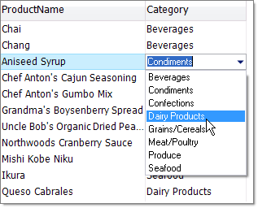

Data Editing Support
Control Cell Editing, Addition and Removal of rows
The following properties can be used to restrict user interaction and data modification:
AllowEditRow
AllowDeleteRow
AllowAddNewRow
AddNewRowPosition determines if a new grid row will be shown at the top or bottom of the grid.
BeginEditMode__determines the action that will initiate editing and can
be one of the following __RadGridViewBeginEditingMode enumeration members: BeginEditOnEnter,
BeginEditOnKeystroke, BeginEditOnKeystrokeOrF2, BeginEditOnF2
or BeginEditProgrammatically.
Column Types
RadGridView has the following types of columns capable of editing data that will be persisted automatically:
By default RadGridView will extract the values from the corresponding editors of the currently edited
element when updating or inserting a new record. You can get a reference to the editor object being edited using
the RadGridView ActiveEditor property.
Editors
RadTextBoxEditor
This editor is intended for displaying and entering text strings and is used for editing GridViewTextBoxColumn column types. Visually it appears and behaves similar to the RadTextBox control. When the value is loaded in this editor, it is formatted according to setting of the column’s FormatString__property. __ValueChanging and ValueChanged event are fired on each text modification.
RadCheckBoxEditor
This editor is specialized to indicate the binary state of a cell value and is used for editing GridViewCheckBoxColumn column types. Unlike other editors it is present in the grid elements hierarchy as a child element of the GridCheckBoxCellElement and is always visible even if the cell is not edited at the moment. Visually it appears and behaves similar to the RadCheckBox control. ValueChanging and ValueChanged event are fired on every user action that changes the value. 
RadComboBoxEditor
This editor provides the ability to select textual values from a list of predefined items and is used for editing GridViewComboBoxColumn column types. The list with the items is populated by a data source set to the GridViewComboBoxColumn.DataSource property. Visually it appears and behaves similar to the RadComboBox control (see the screenshot above). If RadComboBoxEditor is configured as a look-up editor then the ValueMember property field will be persisted. ValueChanging and ValueChanged event are fired on change of the selected item in the combo box.
RadDateTimeEditor
This editor provides the ability to select or enter dates and is used for editing GridViewDateTimeColumn column types. Visually it appears and behaves similar to the standard DateTimePicker control. The date value can be entered as a text directly in the text box part of the editor or selected in the drop-down calendar. When the value is loaded in this editor, it is formatted according to setting of the column’s FormatString property. ValueChanging and ValueChanged event are fired on every change of the date value.
RadSpinEditor
This editor is intended to provide a convenient way for editing numeric values and is
used within GridViewDecimalColumn column types.
Visually it appears and behaves similar to the standard NumericUpDown control. There are two buttons on the right side for
increasing and decreasing the value in the editor. If the value has decimal places after the decimal point, only the integral part of the value is changed.
ValueChanging and ValueChanged event are fired on every change of the value.